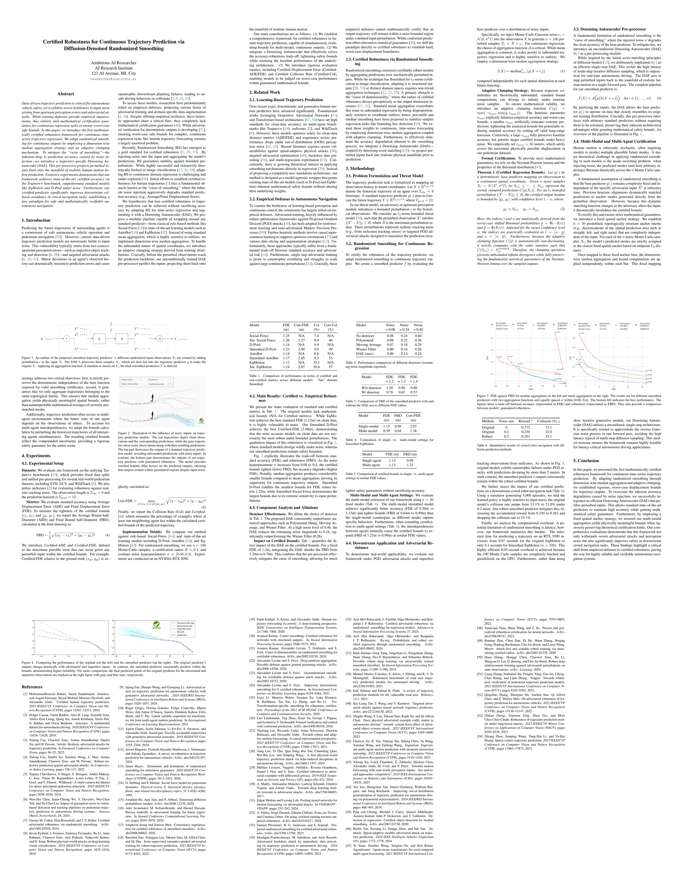
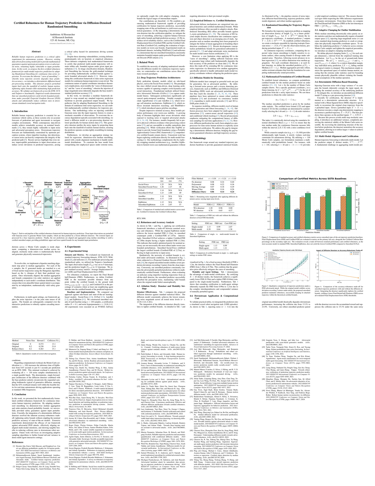
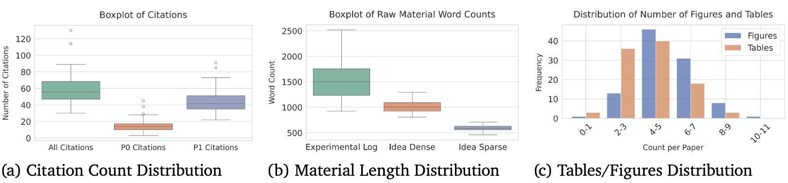
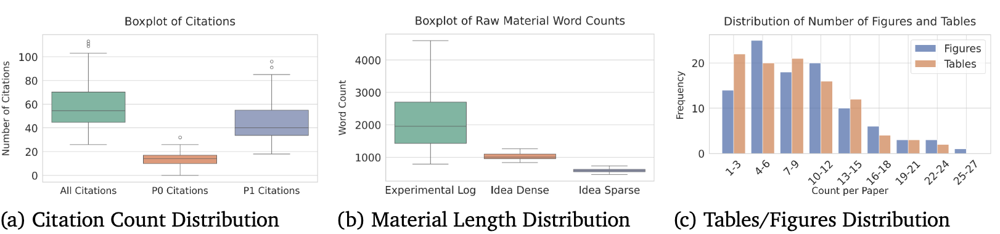
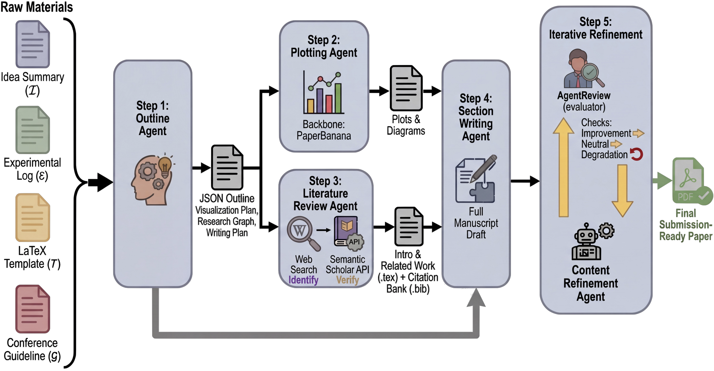
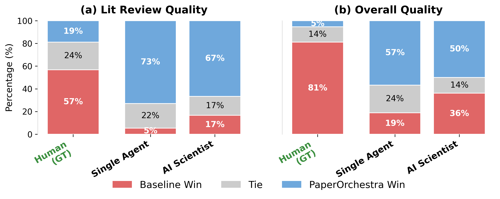

PaperOrchestra
Generated Manuscript Gallery
Below are full-length manuscripts generated by PaperOrchestra using sparse idea summaries and raw experimental logs as input. These examples demonstrate the framework's ability to natively render submission-ready papers using provided LaTeX templates, with generated tables and synthesized visuals integrated cohesively.




Abstract
Synthesizing unstructured research materials into manuscripts is an essential yet under-explored challenge in AI-driven scientific discovery. Existing autonomous writers are rigidly coupled to specific experimental pipelines, and produce superficial literature reviews. We introduce PaperOrchestra, a multi-agent framework for automated AI research paper writing. It flexibly transforms unconstrained pre-writing materials into submission-ready manuscripts, featuring a comprehensive literature review with API-grounded citations, alongside seamlessly generated visuals like plots and conceptual diagrams.
PaperWritingBench Dataset
To evaluate performance independently, we present PaperWritingBench, the first standardized benchmark of reverse-engineered raw materials from 200 top-tier AI conference papers (100 papers per venue from CVPR 2025 and ICLR 2025). This venue selection ensures high academic standards while rigorously testing the adaptability of AI writers to distinct conference formats, namely the double-column CVPR layout versus the single-column ICLR layout. Our dataset isolates the writing task by providing unconstrained, pre-writing inputs. This approach mimics the authentic research phase where experiments are completed but drafting has not yet begun, challenging AI writing systems to rely purely on sparse ideas and lab notes.
These raw materials consist of an Idea Summary (distilling the core methodology and theoretical foundation) and an Experimental Log (containing fully extracted numeric data from tables, while insights from figures are converted into standalone factual observations), alongside venue-specific LaTeX templates and conference guidelines.


The Multi-Agent Pipeline
PaperOrchestra strategically decouples the writing process across specialized agents to enable parallel execution and iterative self-reflection. The Outline Agent synthesizes inputs into a structured plan; the Plotting Agent generates conceptual diagrams and statistical plots; the Literature Review Agent conducts targeted web searches to discover candidate papers and verifies their existence and relevance via the Semantic Scholar API to build a robust citation graph; the Section Writing Agent authors the full LaTeX manuscript; and the Content Refinement Agent iteratively optimizes the draft based on simulated peer-review feedback.

Human Evaluation
We benchmarked PaperOrchestra against two primary autonomous pipelines: a Single Agent baseline (which processes all raw materials and executes drafting in a single monolithic LLM call) and AI Scientist-v2 (a state-of-the-art system featuring multi-round citation gathering and iterative self-reflection).
To rigorously compare ours against the baselines, we conducted side-by-side (SxS) human evaluations with 11 AI researchers. Evaluators blindly compared manuscripts generated by PaperOrchestra against the AI baselines, as well as the human-written Ground Truth (GT).

Ethics Statement
We position our system as an advanced assistive tool designed to accelerate the drafting process of AI research papers, rather than an independent entity capable of claiming authorship. Human researchers must retain full accountability for the factual accuracy, originality, and validity of the claims presented in any generated manuscript. While PaperOrchestra incorporates robust programmatic safeguards—such as API-grounded citation validation—to minimize hallucinations and ensure scholarly rigor, users are responsible for verifying the outputs to prevent the propagation of LLM-derived biases or misinformation.
Citation
@misc{song2026paperorchestramultiagentframeworkautomated,
title={PaperOrchestra: A Multi-Agent Framework for Automated AI Research Paper Writing},
author={Yiwen Song and Yale Song and Tomas Pfister and Jinsung Yoon},
year={2026},
eprint={2604.05018},
archivePrefix={arXiv},
primaryClass={cs.AI},
url={https://arxiv.org/abs/2604.05018},
}